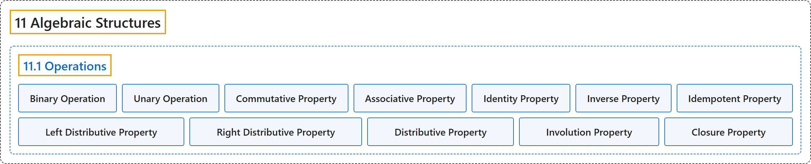

11.1 Operations
Classification

Glossary
| Term | Definition | 中文翻译 | Source |
|---|---|---|---|
| 11.1 Operations 运算 |
(No definition) | （无定义） | Doerr & Levasseur, n.d., section 11.1 |
| Binary Operation 二元运算 |
"Let \(S\) be a nonempty set. A binary operation on \(S\) is a rule that assigns to each ordered pair of elements of \(S\) a unique element of \(S\text{.}\) In other words, a binary operation is a function from \(S\times S\) into \(S\text{.}\)" | 设 \(S\) 为非空集合。\(S\) 上的二元运算是为 \(S\) 的每个有序元素对指定 \(S\) 中唯一一个元素的规则。换言之，二元运算是从 \(S\times S\) 到 \(S\) 的函数。 | Doerr & Levasseur, n.d., Definition 11.1.1 |
| Unary Operation 一元运算 |
"Let \(S\) be a nonempty set. A unary operator on \(S\) is a rule that assigns to each element of \(S\) a unique element of \(S\text{.}\) In other words, a unary operator is a function from \(S\) into \(S\text{.}\)" | 设 \(S\) 为非空集合。\(S\) 上的一元运算是为 \(S\) 的每个元素指定 \(S\) 中唯一一个元素的规则。换言之，一元运算是从 \(S\) 到 \(S\) 的函数。 | Doerr & Levasseur, n.d., Definition 11.1.4 |
| Commutative Property 交换律 |
"Let \(*\) be a binary operation on a set \(S\text{.}\) We say that \(*\) is commutative if and only if \(a * b = b * a\) for all \(a, b \in S\text{.}\)" | 设 \(*\) 为集合 \(S\)。 上的二元运算。我们说 \(*\) 是可交换的，当且仅当对所有 \(a, b \in S\)。 都有 \(a * b = b * a\)。 | Doerr & Levasseur, n.d., Definition 11.1.5 |
| Associative Property 结合律 |
"Let \(*\) be a binary operation on a set \(S\text{.}\) We say that \(*\) is associative if and only if \((a * b) * c = a * (b * c)\) for all \(a, b, c \in S\text{.}\)" | 设 \(*\) 为集合 \(S\)。 上的二元运算。我们说 \(*\) 是可结合的，当且仅当对所有 \(a, b, c \in S\)。 都有 \((a * b) * c = a * (b * c)\)。 | Doerr & Levasseur, n.d., Definition 11.1.6 |
| Identity Property 单位元性质 |
"Let \(*\) be a binary operation on a set \(S\text{.}\) We say that \(*\) has an identity if and only if there exists an element, \(e\text{,}\) in \(S\) such that \(a * e = e * a = a\) for all \(a \in S\text{.}\)" | 设 \(*\) 为集合 \(S\) 上的二元运算。我们说 \(*\) 有单位元，当且仅当 \(S\) 中存在元素 \(e\)，，使得对所有 \(a \in S\)。 都有 \(a * e = e * a = a\)。 | Doerr & Levasseur, n.d., Definition 11.1.7 |
| Inverse Property 逆元性质 |
"Let \(*\) be a binary operation on a set \(S\text{.}\) We say that \(*\) has the inverse property if and only if for each \(a \in S\text{,}\) there exists \(b \in S\) such that \(a*b = b*a = e\text{.}\) We call \(b\) an inverse of \(a\text{.}\)" | 设 \(*\) 为集合 \(S\)。 上的二元运算。我们说 \(*\) 具有逆元性质，当且仅当对每个 \(a \in S\)，存在 \(b \in S\) 使得 \(a*b = b*a = e\)。我们称 \(b\) 为 \(a\)。 的逆元。 | Doerr & Levasseur, n.d., Definition 11.1.8 |
| Idempotent Property 幂等律 |
"Let \(*\) be a binary operation on a set \(S\text{.}\) We say that \(*\) is idempotent if and only if \(a * a = a\) for all \(a \in S\text{.}\)" | 设 \(*\) 为集合 \(S\)。 上的二元运算。我们说 \(*\) 是幂等的，当且仅当对所有 \(a \in S\)。 都有 \(a * a = a\)。 | Doerr & Levasseur, n.d., Definition 11.1.9 |
| Left Distributive Property 左分配律 |
"Let \(*\) and \(\diamond\) be binary operations on a set \(S\text{.}\) We say that \(\diamond\) is left distributive over \(*\) if and only if \(a \diamond (b * c) = (a \diamond b) * (a \diamond c)\) for all \(a,b,c\in S\text{.}\)" | 设 \(*\) 和 \(\diamond\) 为集合 \(S\)。 上的二元运算。我们说 \(\diamond\) 对 \(*\) 是左分配的，当且仅当对所有 \(a,b,c\in S\)。 都有 \(a \diamond (b * c) = (a \diamond b) * (a \diamond c)\)。 | Doerr & Levasseur, n.d., Definition 11.1.10 |
| Right Distributive Property 右分配律 |
"Let \(*\) and \(\diamond\) be binary operations on a set \(S\text{.}\) We say that \(\diamond\) is right distributive over \(*\) if and only if \((b * c)\diamond a = (b\diamond a) * (c \diamond a)\) for all \(a,b,c\in S\text{.}\)" | 设 \(*\) 和 \(\diamond\) 为集合 \(S\)。 上的二元运算。我们说 \(\diamond\) 对 \(*\) 是右分配的，当且仅当对所有 \(a,b,c\in S\)。 都有 \((b * c)\diamond a = (b\diamond a) * (c \diamond a)\)。 | Doerr & Levasseur, n.d., Definition 11.1.11 |
| Distributive Property 分配律 |
"Let \(*\) and \(\diamond\) be binary operations on a set \(S\text{.}\) We say that \(\diamond\) is distributive over \(*\) if and only if \(\diamond\) is both left and right distributive over \(*\text{.}\)" | 设 \(*\) 和 \(\diamond\) 为集合 \(S\)。 上的二元运算。我们说 \(\diamond\) 对 \(*\) 是可分配的，当且仅当 \(\diamond\) 对 \(*\) 既是左分配的又是右分配的。 | Doerr & Levasseur, n.d., Definition 11.1.12 |
| Involution Property 对合律 |
"Let \(-\) be a unary operation on \(S\text{.}\) We say that \(-\) has the involution property if \(-(-a) = a\) for all \(a \in S\text{.}\)" | 设 \(-\) 为 \(S\)。 上的一元运算。我们说 \(-\) 具有对合性质，如果对所有 \(a \in S\)。 都有 \(-(-a) = a\)。 | Doerr & Levasseur, n.d., Definition 11.1.13 |
| Closure Property 封闭性 |
"Let \(T\) be a subset of \(S\) and let \(*\) be a binary operation on \(S\text{.}\) We say that \(T\) is closed under \(*\) if \(a, b \in T\) implies that \(a * b \in T\text{.}\)" | 设 \(T\) 为 \(S\) 的子集，\(*\) 为 \(S\) 上的二元运算。我们说 \(T\) 对 \(*\) 封闭，如果 \(a, b \in T\) 蕴含 \(a * b \in T\)。 | Doerr & Levasseur, n.d., Definition 11.1.14 |
References
Doerr, A., & Levasseur, K. (n.d.). Applied discrete structures. Retrieved October 28, 2026, from https://discretemath.org/ads/index-ads.html